Designing for Trust in IBM Network Intelligence
IBM Network Intelligence is an AI helper for network teams. It works with the tools a team already uses, across many systems and vendors. It finds the cause of a network problem and suggests a fix. It can apply the fix itself, or wait for a person to approve it. The goal is to save money, handle more growth and show what is happening in real time.
In simple words: when the network has a problem, INI looks at the data from every system, works out what caused it, and tells the team what to do. Think of it as a detective for the network: it finds what happened, why it happened, and how to fix it.
The Challenge: Too Many Alarms, Too Few Answers
Telecom networks are huge and use equipment from many companies. Every day, teams get flooded with alarms. Real problems can go unnoticed until customers complain.
When many problems hit at once, engineers cannot tell what matters most.
- Alarm floods: Thousands of alarms arrive, and most are false alarms.
- Silent failures: Some problems are never flagged at all.
- Slow fixes: Slow fixes mean costly downtime.
Like a detective, INI listens to everything and keeps only what matters.
- Filters the noise: False leads and distractions are removed.
- Connects the dots: Step by step, it follows the timeline to the root cause.
- Hands over the case file: What happened, why, and how to fix it and stop it happening again.
What INI Does
Six abilities turn raw network data into clear steps people can trust.
Fewer False Positives
Understands the meaning of alarms to remove noise and share only useful, reliable findings.
Spots Problems as They Happen
Looks at patterns over time to spot small slowdowns before they break service promises to customers.
Root Cause Localization
Finds where a chain of problems started, across complex service paths.
Multi-Vendor Integration
Works with Cisco, Juniper, cloud and software-defined networks, and connects to tools like ServiceNow.
Continuous Learning
Keeps improving as traffic, network layouts and operator feedback change.
Clear, Safe Decisions
Builds trust by showing how the AI made its choice and by limiting what it can do.
How INI Works: From Data to Fix
I designed the whole journey in four steps: connect the data, find problems, look into the cause, and fix the issue.
Bring In the Data
Pull and push sourcesTeams connect network data from many vendors in a few steps, using both past and live data.
- Choose the right sign-in method for each data source, then set up sites and organizations.
- Manage everything from one Data Sources page that also shows how much data comes in by type.
Remove Noise, Find Problems
IP Routers & RAN SitesThe analysis step removes noise, finds unusual behavior and turns useful patterns into observations.
- The Dashboard shows all observations from IP routers and radio sites, filtered by time period.
- An "analysis progress" view shows the whole investigation from start to finish in one place.
Explain What Happened
Observations and Likely CausesEach unusual event becomes an investigation with its evidence, its most likely causes and the reasoning behind them.
- A list of issues you can search and filter, with an overview and ServiceNow link.
- Users can mark false alarms, run the analysis again on new data, download the reasoning and give feedback.
Suggest and Fix
AI Agents and ChatAI agents suggest the most likely cause and a fix plan. When the user picks a plan, an agent carries it out.
- The plan appears in chat, so users can change it, ask questions or approve it.
- After the fix, INI sums up what it did, lets users test the system and offers an undo.
Accurate AI Isn't Enough If People Don't Trust It
Many AI projects fail to pay off. Our model was 92% accurate in testing, but 3 out of 4 operations teams turned the feature off within 90 days.
Design for Confidence
Show the Reasoning
Keep the User in Charge
Match How Operators Think
CAIR: Measuring Trust in AI
CAIR stands for Confidence in AI Results. It is a simple score for how much users trust an AI enough to act on it. It compares what users gain from the AI with what worries them. People often hold back out of fear, not because the AI is weak. So CAIR shows when a design change will help more than improving the model.
Design can lower the risk and the effort to fix mistakes. We did four things:
The fix plan appears in the chat. Users can ask questions, change it or approve it.
Graphs, reasoning and checks are open to see, and users can ask about them in the chat.
INI explains what it did and lets users test the system afterwards.
Users can go back to how things were whenever they want.
INI in Action
The product, step by step. Select an image to enlarge it.
User journey. A network operations engineer using INI, from connecting data to acting on a fix. The numbers match the screens below.
Connect
Bring data from my network tools into one place.
Overview
See what needs attention right now.
Investigate
Find out which issue matters and why it happened.
Check the evidence
Check that the AI's reasoning is right.
Decide and act
Pick a fix and have it done.
Connecting Data Sources
Connecting data from many vendors, step by step.
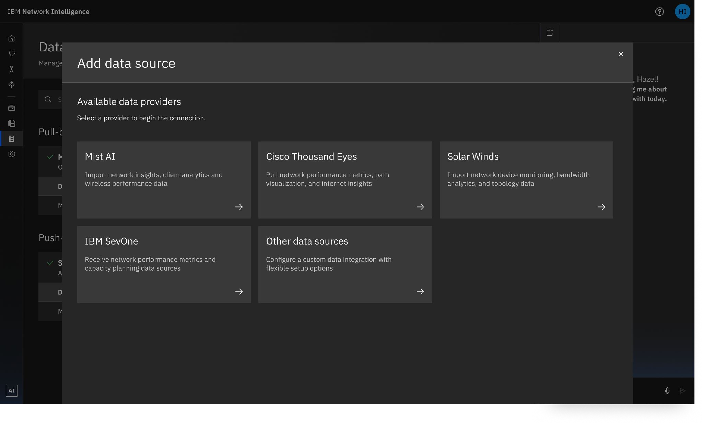
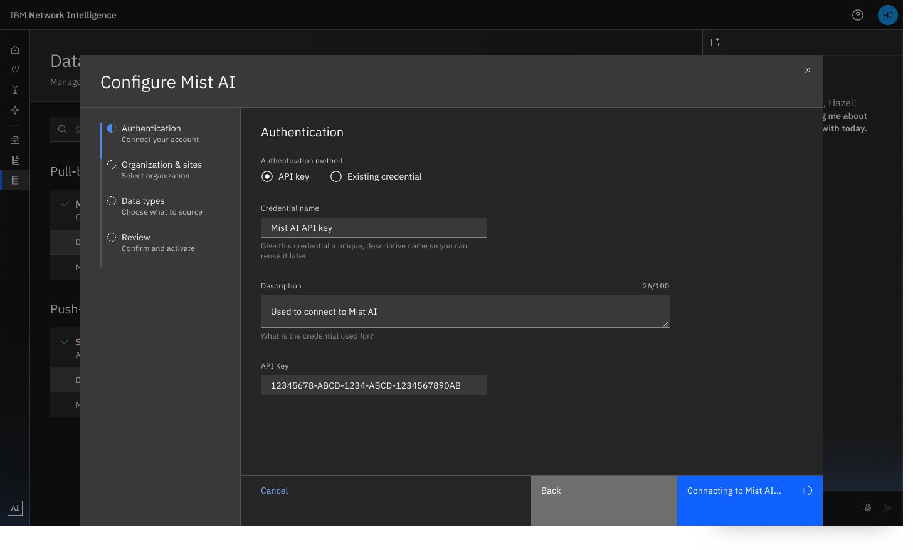
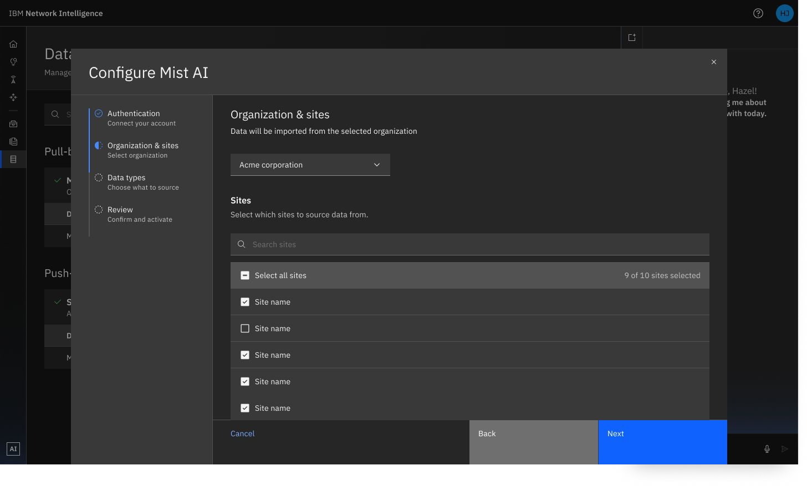
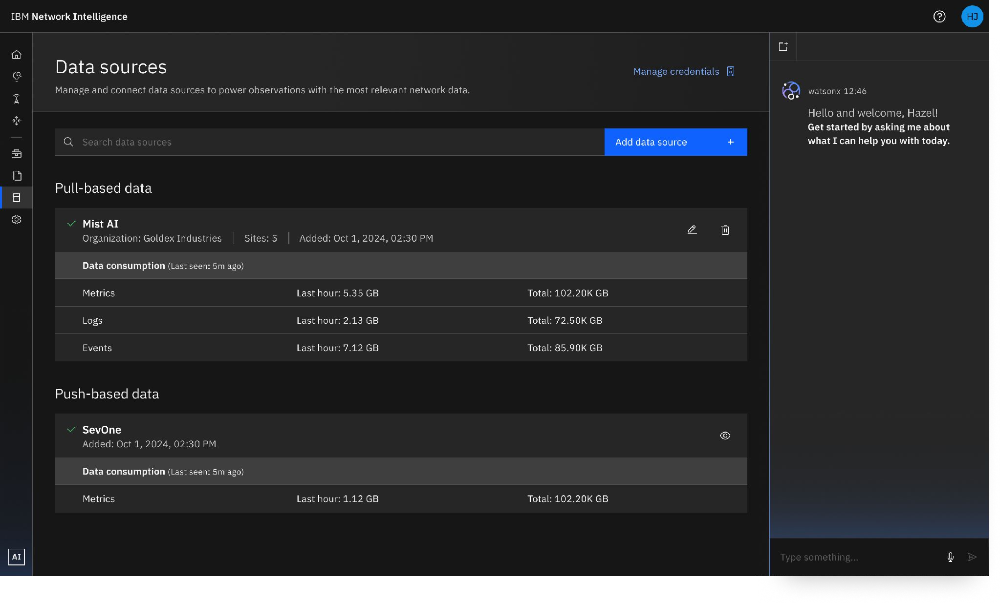
Dashboard and Network Views
One place to see what INI has found.
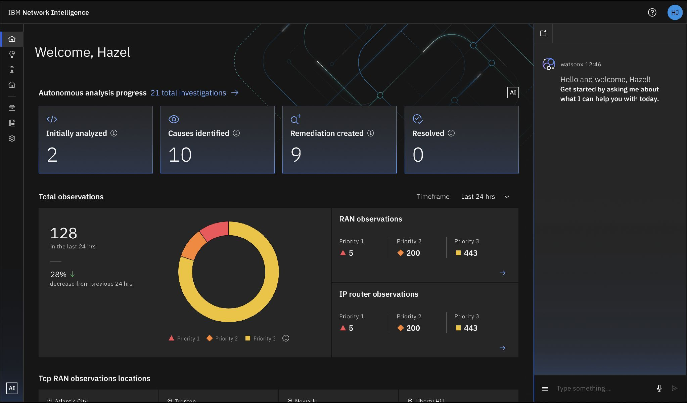
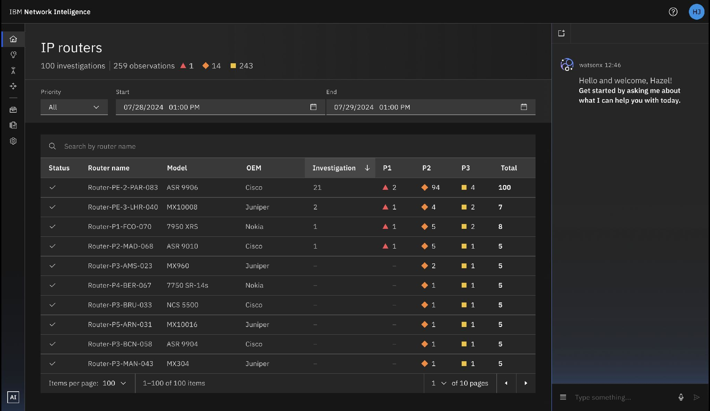
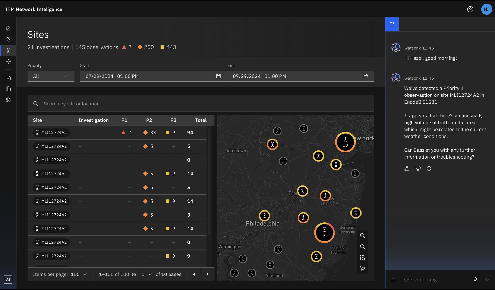
Investigations
From a list of issues to the reasoning behind each one.
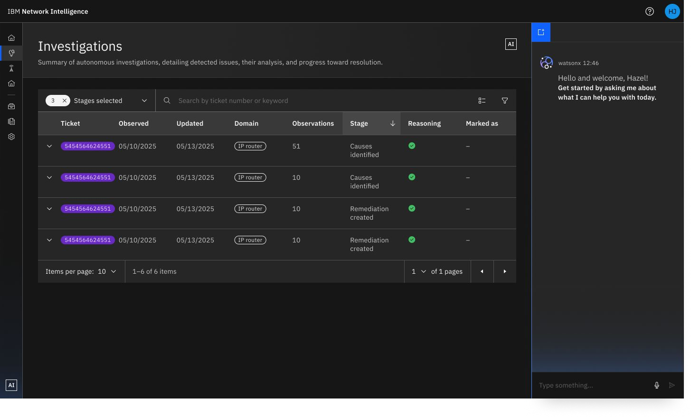
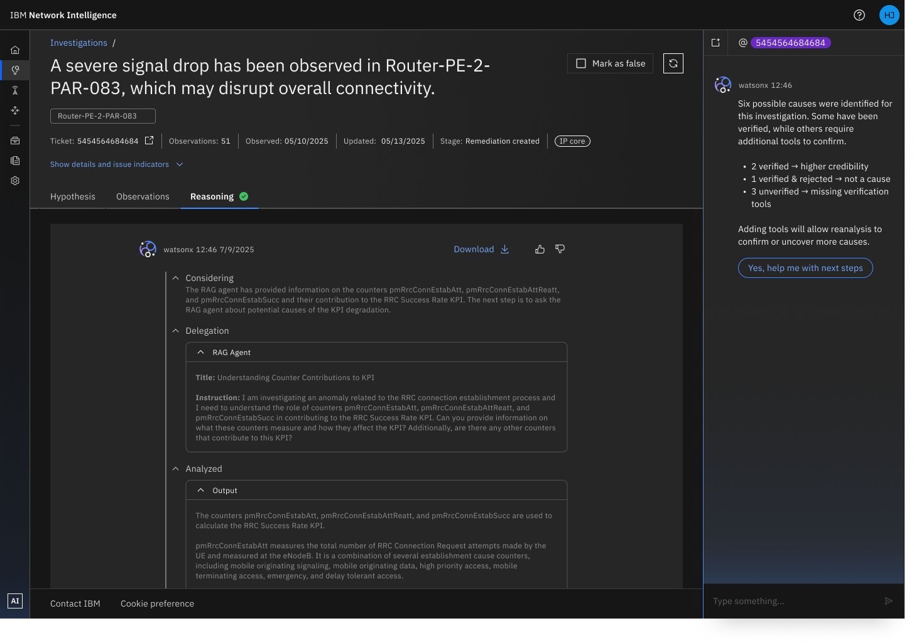
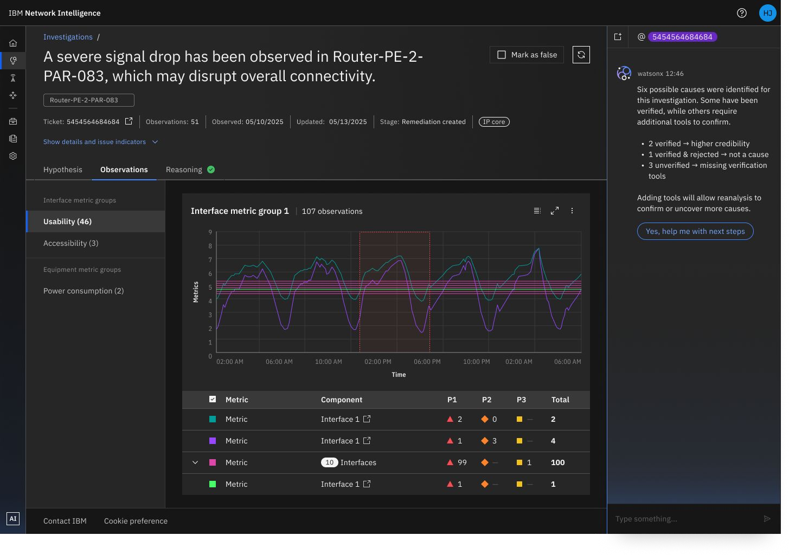
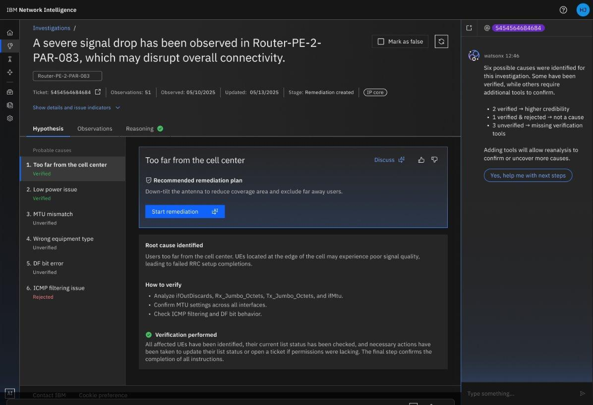
Results
We measured value, risk and the effort to fix mistakes. Then we redesigned the screens around them. This turned an accurate model into a feature people keep using.
Designing Onboarding for IBM Network Intelligence
IBM Network Intelligence only becomes useful once it is connected to a customer's network data and told which equipment to watch. Onboarding is the guided path from the first welcome screen to the first analysis. It takes a new user from "I have installed it" to "it is analysing my network", without a services engagement or a manual.
The Challenge: Value Starts After Setup
INI cannot show any insight until it has data and knows which equipment to watch. Every step before that is work the user has not been rewarded for yet.
Setup asks for many technical choices before people have seen the product work.
- Many sources: Each vendor and tool has its own connection details and sign-in method.
- Many decisions: Users must choose metrics and equipment before they know what good looks like.
- No sense of progress: A long form hides how far along the user is, so people give up.
Like a good host, the product greets the user, explains what comes next and stays with them.
- Greets by name: A welcome screen that sets the goal and lists the steps.
- One step at a time: Short wizards instead of one long form.
- Always oriented: A guidance panel keeps the next step and the progress in view.
Four Principles Behind the Flow
These rules decided what went into each screen, and what was left out.
Show the Whole Path First
The welcome screen lists what is coming, so the user knows the size of the task before starting.
One Decision per Screen
Configuration is split into short steps, each asking for one thing, with Back and Next always in the same place.
Guide Without Blocking
Help sits in a side panel next to the task. It explains the step without covering the screen.
Confirm Every Success
After each step the product says what was saved and what to do next, so progress feels real.
From Welcome to First Analysis
I designed the first run in 4 phases: welcome, connect the data, choose what to observe, and choose what to analyse.
Set the Goal
Welcome and checklistA personal welcome explains what INI does and lists the steps to get started.
- Each step is a card the user can open, so there is one clear place to start.
- A guidance panel on the right keeps the next action visible.
Add a Data Source
Provider wizardThe user picks a provider and is walked through a configuration wizard, one setting at a time.
- The same wizard pattern for every provider, so the second connection is easier than the first.
- A success message confirms the source and returns the user to the Data Sources list.
Choose What to Measure
Observation metricsMetrics are grouped by category. Users add or remove metrics from a list instead of starting from nothing.
- A starting set is already in place, so users edit rather than build.
- An add and remove dialog lets them tune the set to their network.
Choose What to Watch
Routers and equipmentThe user manages routers and selects the equipment INI should analyse, then the analysis starts.
- A table with search, filters and multi-select makes large estates manageable.
- Confirmation messages show that the selection was saved and analysis is under way.
Balancing Speed, Control and Clarity
A first-time setup must be quick for beginners and still give experts control.
Start Fast, Tune Later
Many Providers, One Pattern
Help That Stays Out of the Way
Handle Large Estates
The Onboarding Flow
The full flow on one board. Select an image to enlarge it.
User journey. A new INI admin going from the first welcome screen to a running analysis.
Welcome
Understand what to do first.
Connect
Bring my network data in.
Observe
Pick the metrics that matter.
Analyse
Choose the equipment to watch.
Flow Overview
Welcome, data sources, the configuration wizard, observation metrics and router selection, laid out as one connected flow.
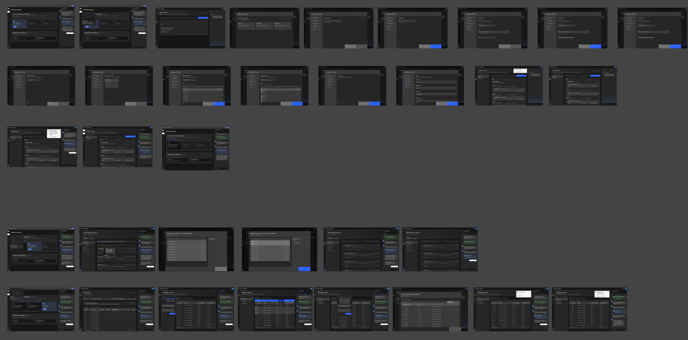
Getting Started
The first screen a new user sees. Three mandatory steps guide setup, and optional steps extend the system later. A guidance panel explains each step before the user acts.
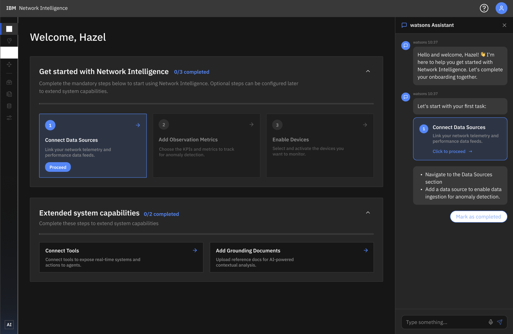
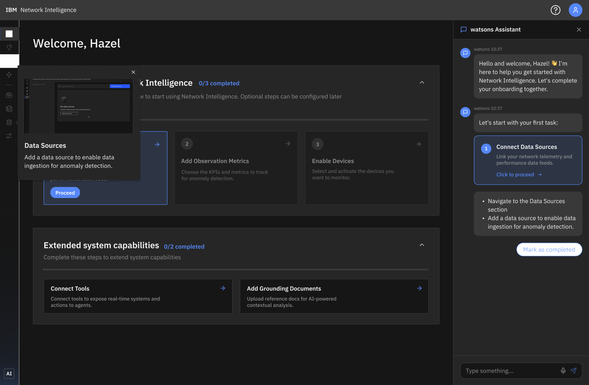
Designing for Invisible UI & AI That Fixes Problems
Invisible UI means AI agents do the routine work in the background, so the operator has no dashboard to watch. The screen shows up only when a person needs to decide, as a short decision card. The best screen is the one the operator rarely has to open.
The Challenge: Too Many Screens to Watch
In big telecom companies and large enterprises, engineers in network operations centers (NOCs) watch 10,000+ alerts a day across 20+ separate screens. This causes tiredness, stress, and 4–8 hours before a problem is even noticed.
Traditional tools assume more screens mean better visibility. They don't.
- Too much noise: 90% of alerts need no action.
- Scattered context: Operators piece clues together across 5 tabs.
- Slow fixes: Searching by hand turns a fix into hours.
Instead of another dashboard to watch, AI agents work quietly in the background.
- Quiet by default: Agents handle routine alerts on their own.
- Shows up when needed: The screen appears only for decisions or approvals.
- You set the autonomy: Choose advice only, supervised, or fully automatic.
How I Ran Research, Prototyping and Testing
AI that acts on its own can't be designed with static drawings alone. I used 4 phases: learn from operators, define the model, build working prototypes, and test for trust.
Watching Operators at Work
28 operators · 6 accountsI watched operators at major telecom companies during live outage drills to see what they do and where they struggle.
- Most of the sorting time went to switching between separate dashboards.
- Operators felt nervous before running risky commands.
4 Pillars Framework
System DesignI turned what we learned into a simple framework: the 4 Pillars. AI agents handle routine noise and show a clear decision card only when a person is needed.
- Defined four kinds of agent action: Read, Write, Notify and Escalate.
- Set limits on how much an agent can change at once, so problems don't spread.
Working Prototypes
Figma → Live CodeInstead of reviewing slides, we built prototypes people could use: a Slack incident simulator, a 3D network map, and practice areas that copy real network failures.
- Showed results as they loaded, so operators never wait for the AI to finish.
- Added practice areas to test undo steps with no risk to live systems.
Testing Trust and Speed
Numbers and InterviewsWe tested with operations teams. We compared old dashboards with Invisible UI decision cards in simulated major outages.
- Measured how fast operators decided and how well they understood the AI's reasoning.
- Operators rejected suggestions below 90% confidence unless they could see the proof in one click.
The Four Pillars of Invisible UI
I designed the core system that lets AI agents work on their own while staying safe and easy to trust.
Adjustable Autonomy
Autonomy isn't all or nothing. Teams choose how much freedom agents get, based on risk and how important the system is.
Safe, Actionable Playbooks
Agents don't just chat. They make clear step-by-step plans (Read, Write, Notify, Escalate) and test them in a safe practice area before anything goes live.
One Clear Picture
Agents gather signals from many systems, such as network, DNS and cloud logs, into one 3D map, so operators see the whole picture.
Explainable Decisions
To build trust, every suggestion comes with a saved record: the evidence, how sure the agent is, and a one-click undo.
Leading Teams and Solving Disagreements
Moving from dashboards to AI that acts on its own meant getting the product, AI research, engineering and security teams to agree.
Chatbot vs. Decision Cards
Raw Logs vs. Clear Explanations
Winning Over Risk Officers
One Incident, Before and After
The steps a network operator takes during an outage, from the first alert to the fix. It shows where dashboards slow them down and where Invisible UI helps.
Alert
Know when something real is wrong.
Triage
Decide what needs a person.
Understand
Find the cause.
Decide
Choose a safe action.
Fix and check
Resolve it and confirm it worked.
Try the Prototypes
Try the working prototypes and practice areas we built to test Invisible UI with real operators.
Results After Launch
This is a concept, not a shipped product. The figures below are the outcomes the design is meant to achieve, not results from real customer pilots or 12 months of usage data.
What That Means for the Business
Worked out from the target figures above (4.5 hrs to 38 mins; 88%; 10,000+ alerts a day). These are simple sums of the targets, not measured results.
Risk went down as well as time. Every automatic action has a decision record, a limit on how much it can change, and one-click undo. The audit trail also meets ISO-42001. This is how operators reached a 95% trust score.